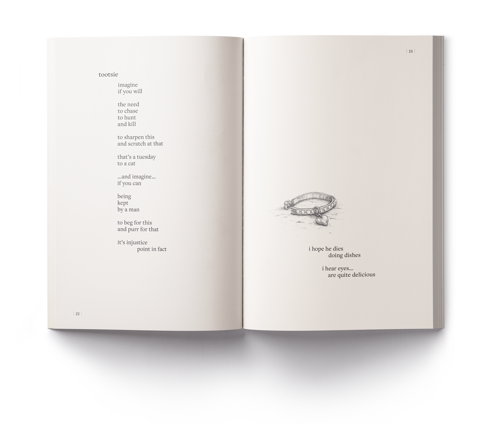

—Book

it's all
downhill
from here
Some of it happened. Some of it didn't. They're poems. You were warned.
A hundred-plus pages of poems, sketches, and observations about love, family, music, growing older, questionable choices, and finding humor where it probably shouldn't exist. Independently published, July 2026 — because apparently branding other people wasn't enough. He wanted a cover of his own.
Read it on Amazon →